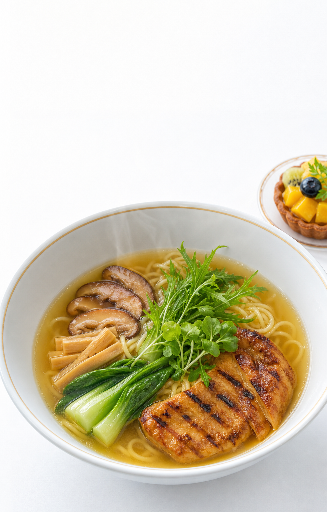
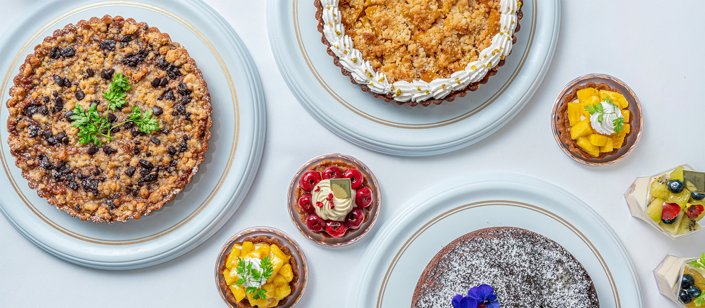

澄んだ
野菜だし
素材の輪郭を残しながら、最後まで飲める深さへ。
MERCY Vegan Factory / Franchise store
MERCYの料理とスイーツはそのままに、この店だけの一杯を。
動物性食材を使わず、食べ応えまできちんと。

昆布、椎茸、野菜の重なり。やさしいだけで終わらない、
MERCYらしい一杯をつくります。
素材の輪郭を残しながら、最後まで飲める深さへ。
水菜とカイワレ、青菜、椎茸。見た目にも食材が明確な盛り付け。
通常麺とグルテンフリー対応を、わかりやすく案内します。

Same philosophy. One new bowl.
ラーメンだけの別ブランドではありません。
スイーツ、惣菜、素材への考え方、明るい空間。
既存店の魅力を引き継ぐFC店舗です。
美しい人生は、MERCY Vegan Factory
美味しいヴィーガン料理から。